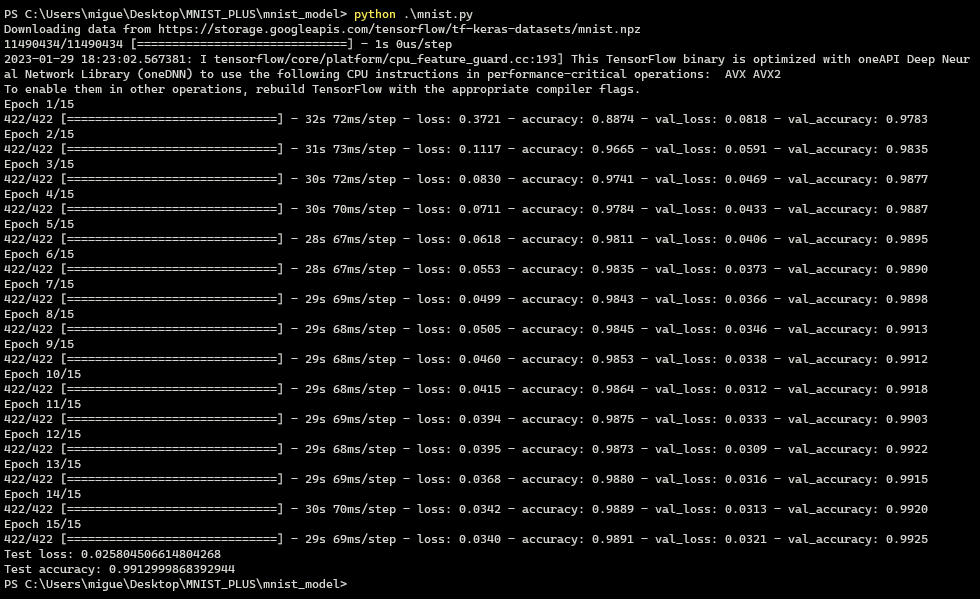
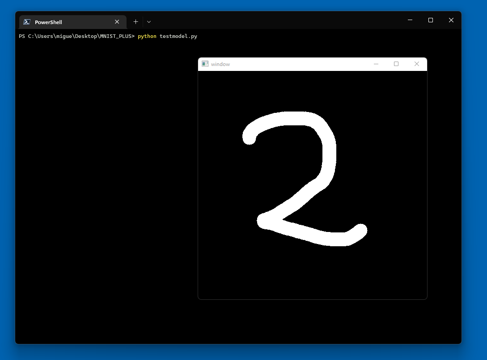
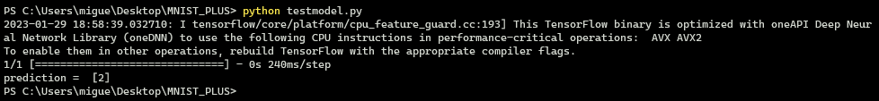
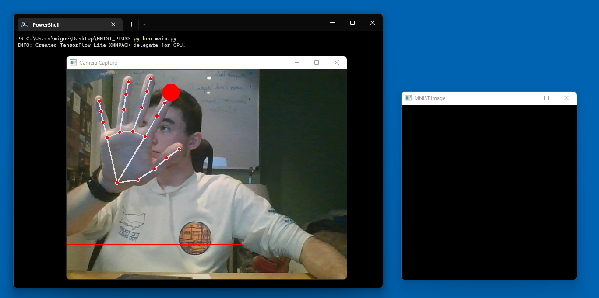
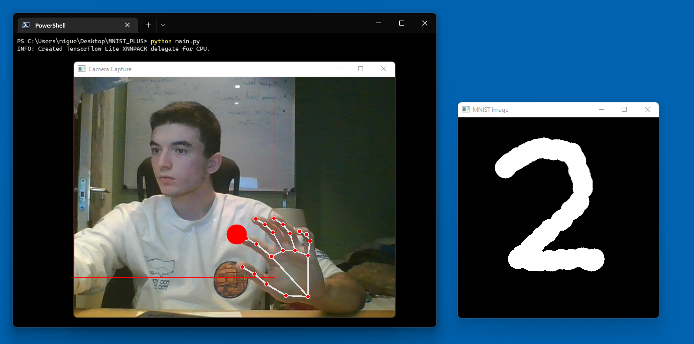
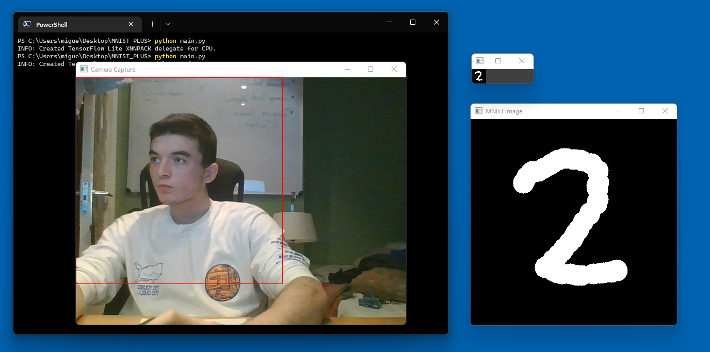
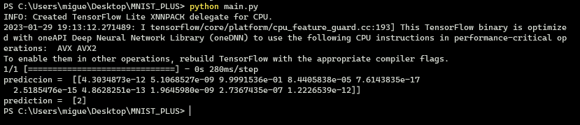

Table of Contents
- 1. Sistema Inteligente para detección de digitos escritas mediante gestos
- 2. Para entrenar el modelo y generar model.h5
- 3. Para probar el modelo utilizando el ratón como medio para dibujar
- 4. Para utilizar el modelo ya entrenado y probado con mediapipe y el reconocimiento de manos
- 5. Aspectos concretos del proyecto
1 Sistema Inteligente para detección de digitos escritas mediante gestos
El sistema inteligente propuesto es capaz de reconocer dígitos obtenidos mediante métodos de visión por computador. Es decir, útilizando el dedo índice de una mano, y "dibujando en el aire", el sistema será capaz de reconocer el dígito dibujado. La aplicación se ejecuta de la siguiente manera:
- Se abrirán dos ventanas
- Ventana 1 ("Camera Capture"): La primera Ventana contendrá el video en tiempo real capturado por la webcam mediante las OpenCV
- Ventana 2 ("MNIST Image"): Esta ventana contendrá la imagen que posteriormente será procesada para reconocer el dígito que se quiere evaluar.
- El usuario tiene 3 opciones:
- Pulsar "d": Alternará entre modo Dibujar y modo No Dibujar.
- Pulsar "m": Pasará la imagen mostrada en la ventana "MNIST Image" por varios filtros para procesarla con el modelo de IA y reconocer el dígito dibujado
- Pulsar "q": Salir de la aplicación
1.1 Herramientas necesarias
Para poder llevar a cabo la implementación de la idea se hará uso de las siguientes herramientas:
- python
- opencv
- mediapipe
- numpy
- tensorflow
- keras
1.1.1 Resolución de dependencias
Para resolver las dependencias de las mismas es suficiente con instalar python y pip en tu sistema y ejecutar los siguientes comandos:
pip install opencv-python pip install opencv-contrib-python pip install mediapipe pip install numpy pip install tensorflow pip install keras
La idea principal es mediante la libreria opencv capturar video desde una cámara web. Para posteriormente filtrar las imagenes y pasarlas por el modelo de mediapipe para detecciónn de manos, lo que permitirá conocer la posición de cada dedo. De esta manera será más fácil administrar el reconocimiento de gestos. Además de utilizar un método de ML, también se hará uso de las técnicas de segmentación y descripción vistas en clase así como de preproceso y filtrado.
2 Para entrenar el modelo y generar model.h5
cd mnist_model python mnist.py

Figure 1: salida de consola después de entrenar el modelo
3 Para probar el modelo utilizando el ratón como medio para dibujar
python testmodel.py

Figure 2: Ventana para dibujar con el ratón

Figure 3: Predicción realizada sobre la imagen después de reescalarla a 28x28 (Pulsar ESC una vez para mostrar la imagen 28x28 y volver a pulsar para realizar la predicción)
4 Para utilizar el modelo ya entrenado y probado con mediapipe y el reconocimiento de manos
python main.py

Figure 4: Aparecen las ventanas para dibujar

Figure 5: Pulsando "D" pasamos a modo Dibujar, realizamos el dibujo y volviendo a pulsar "D" salimos del modo dibujo

Figure 6: Pulsando "M" aplicamos el modelo a la imagen reescalada a 28x28

Figure 7: Predicción del sistema. Pulsar "M" otra vez
5 Aspectos concretos del proyecto
El proyecto consta de 3 ficheros con extensión ".py"
- mnist.py # Corresponde con el código para generar el modelo "model.h5". Es decir, es el programa que entrena la red de neuronas para reconocer dígitos del dataset MNIST. - testmodel # Se trata de un entorno de pruabas que he utilizado para comprobar que el sistema funciona. Permite dibujar dígitos en una ventana pero con el ratón, lo que agiza el proceso de desarrollo de la aplicación. - main.py #El fichero que contiene el programa completo incluye las funcionalidades aportadas por mediapipe. Más adelante se explicará el funcionamiento. - model.h5 # Modelo generado por mnist.py.
Todos los fichero fuente listados contienen comentarios suficientemente descriptivos como para entender el funcionamiento de los diversos elementos que componen la aplicación